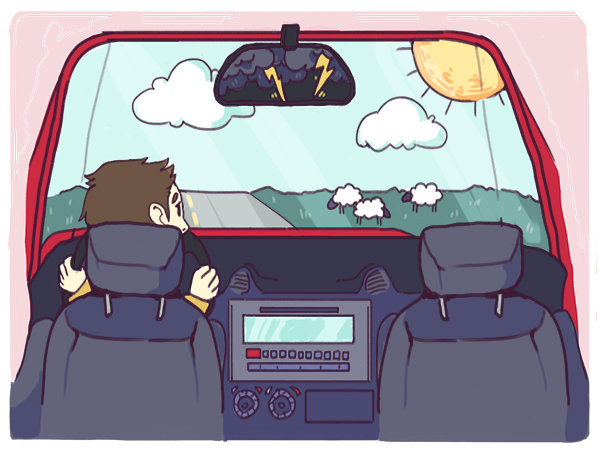
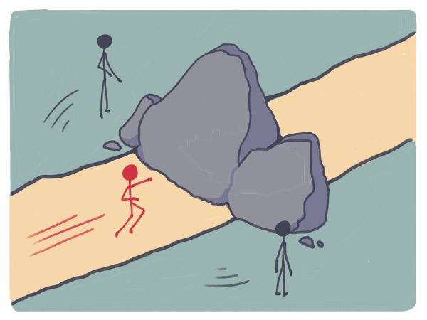

Die Zukunft im Rückspiegel
Bisher haben wir versucht, ein Bauchgefühl von etwas zu vermitteln, das man als einen unregelmässigen globalen Zustand des explosiven Wandels zum Besseren beschreiben könnte. Dieser Wandel findet auf allen Ebenen statt – von Einzelpersonen über Unternehmen und Gemeinschaften bis zur weltweiten gesellschaftlichen Ordnung. Der vielleicht wichtigste Aspekt dieses Wandels besteht darin, dass autoritäre Macht bei der Lösung von Problemen systematisch durch Intelligenz ersetzt wird und somit ein Zustand des stark wachsenden Pluralismus entstehen kann. Da das lautstarke Unbehagen der Elite dem bukolischen Zartgefühl entstammt, ist diese Analyse paradoxerweise nur insoweit stichhaltig, als dass sie sich instinktiv falsch anfühlt – und den Schlagzeilen der letzten Jahre nach zu urteilen ist dies eindeutig der Fall. Unser kollektives Gefühl von drohendem Chaos und verlorengehenden Paradiesen ist eigentlich grossteils ein klares und unzweideutiges Zeichen positiver Veränderungen in der Welt. Diesem Modell zufolge sollten wir uns in der Tat grosse Sorgen machen, wenn sich unser aktuelles kollektives Erleben der menschlichen Existenz utopisch anfühlen und kulturelle Eliten deren Tugenden und Vorzüge anpreisen würden. Gesellschaften, die wie im Film „Die Frauen von Stepford“ eine Fassade oberflächlicher bukolischer Harmonie aufweisen, werden häufig von autoritären, nicht pluralistischen Regierungsformen, verborgenen Dämonen und unsichtbarer Gewalt getragen.
Innovationen können tatsächlich als ständiger moralischer Fortschritt definiert werden, den wir erlangen, indem wir uns direkt den Regimes der grössten moralischen Zwiespältigkeit zuwenden, in denen unsere kollektiven Dämonen lauern. Dort findet auch die Technik ihre maximalen Entfaltungsmöglichkeiten und es ist kein Zufall, dass beides an einem Ort zusammentrifft. Wahrer Fortschritt fühlt sich an wie ein Hereinbrechen von Obszönität und Weltlichkeit und erfordert neue technologische Fähigkeiten, die ihn vorantreiben.
Das subjektive psychologische Empfinden dieses Entwicklungsprozesses beschrieb Marshall McLuhan als Rückspiegeleffekt: „Wir sehen die Welt im Rückspiegel. Wir laufen rückwärts in die Zukunft.“
Unser kollektives Gefühl von drohendem Chaos und verlorengehenden Paradiesen ist eigentlich grossteils ein klares und unzweideutiges Zeichen positiver Veränderungen in der Welt. Diesem Modell zufolge sollten wir uns in der Tat grosse Sorgen machen, wenn sich unser aktuelles kollektives Erleben der menschlichen Existenz utopisch anfühlen und kulturelle Eliten deren Tugenden und Vorzüge anpreisen würden. Gesellschaften, die wie im Film „Die Frauen von Stepford“ eine Fassade oberflächlicher bukolischer Harmonie aufweisen, werden häufig von autoritären, nicht pluralistischen Regierungsformen, verborgenen Dämonen und unsichtbarer Gewalt getragen.
Innovationen können tatsächlich als ständiger moralischer Fortschritt definiert werden, den wir erlangen, indem wir uns direkt den Regimes der grössten moralischen Zwiespältigkeit zuwenden, in denen unsere kollektiven Dämonen lauern. Dort findet auch die Technik ihre maximalen Entfaltungsmöglichkeiten und es ist kein Zufall, dass beides an einem Ort zusammentrifft. Wahrer Fortschritt fühlt sich an wie ein Hereinbrechen von Obszönität und Weltlichkeit und erfordert neue technologische Fähigkeiten, die ihn vorantreiben.
Das subjektive psychologische Empfinden dieses Entwicklungsprozesses beschrieb Marshall McLuhan als Rückspiegeleffekt: „Wir sehen die Welt im Rückspiegel. Wir laufen rückwärts in die Zukunft.“

Unser ästhetisches und moralisches Empfindungsvermögen richtet sich standardmässig auf romantisierte Erinnerungen an verlorene Paradiese. Genaugenommen ist dies der einzige Weg, auf dem wir die Zukunft betreten können. Wir können die Welt gar nicht anders betrachten als mit unserer ständig romantisierenden, in der Vergangenheit gründenden Sichtweise. Nur in einem kleinen Rückspiegel können wir einen Blick auf die Zukunft werfen, und dieses Bild wird notwendigerweise von der Vergangenheit eingerahmt. Um McLuhans Metapher zu erweitern: Die grosse Versuchung besteht darin, eine Vollbremsung zu machen und vom vermeintlichen Rückwärtsgang in den Vorwärtsgang zu wechseln. Das Paradox des Fortschritts besteht darin, dass der scheinbare Vorwärtsgang eigentlich der reaktionäre Weg zurück ist. Was wie der Weg nach unten scheint, ist tatsächlich der Weg nach vorn. Heutzutage sehen wir in unserem kollektiven Rückspiegel eine Menge scheinbare Verderbtheit in Form mehrerer Wege, die direkt in die Hölle führen. Zu denen, die uns am meisten beschäftigen, gehören die folgenden:- Technologische Arbeitslosigkeit: Die Debatte rund um technologische Arbeitslosigkeit und die Sorge, dass „diesmal alles anders“ sei, wenn künstliche Intelligenz und Roboter „alle Jobs verzehren“.
- Ungleichheit: Die wachsende Sorge um andauernde Ungleichheit und die Angst, Software biete im Gegensatz zu vorherigen Technologien wenig Chancen ausserhalb einer aufstrebenden intellektuellen Elite aus Programmierern und Geldgebern.
- „Echte“ Probleme: Die Sorge, „echte“ Probleme wie der Klimawandel, der Zusammenbruch der Artenvielfalt, Gesundheitsversorgung, Wasserknappheit und Energieversorgungssicherheit würden vernachlässigt, während Talente und Energien leichtsinnig für „belanglose“ Apps zum Teilen von Fotos verschwendet werden.
- „Echte“ Innovation: Der Gedanke, die „echte“ Innovation in Bereichen wie der Raumfahrt, fliegenden Autos und Raketenrucksäcken habe stagniert.
- Nationale Wettbewerbsfähigkeit: Der Gedanke, Software, die die Welt verzehrt, bedrohe die nationale Wettbewerbsfähigkeit, die auf Kompetenz im Produktionsbereich und Schülerleistungen bei standardisierten Tests beruht.
- Kultureller Niedergang: Der Gedanke, soziale Netzwerke und scheinbar „qualitativ minderwertige“ neue Medien und Online-Bildung zerstörten die intellektuelle Kultur.
- Cybersicherheit: Die Befürchtung, autoritäre Kräfte würden stark an Macht zur Unterdrückung gewinnen und allerorts die Freiheit bedrohen: durch Technologien zur Überwachung und Cyberkriegsführung (wobei Letztere von Würmern wie Stuxnet, die von Geheimdiensten erschaffen wurden, bis hin zu Drohnenangriffen reichen), die für Normalbürger unerreichbar sind.
- Das Ende des Internets: Die Sorge, neue Entwicklungen aufgrund von kommerziellen Interessen stellten eine tiefgreifende und existentielle Bedrohung für die Freiheiten und Möglichkeiten dar, an die wir uns beim Internet gewöhnt haben.
Es muss etwas geschehen
Das hier ist etwas
Das hier muss geschehen
Prometheisches Empfinden legt nahe, dass die richtige Antwort auf dieses Gefühl der Dringlichkeit nicht im Trugschluss des Politikers liegt, sondern in Handlungsweisen, die der Intuition zuwiderlaufen: geradewegs mitten in die Unsicherheiten hineinzufahren, die von den mehrdeutigen Problemstellungen umrahmt werden. Wenn nur reaktionäre bukolische Wege erwogen, ziehen Prometheusianer daraus häufig den Schluss, lieber gar nichts zu unternehmen, und die Dinge ihren Lauf nehmen zu lassen. In anderen Worten lautet unsere grundlegende Antwort auf das Gewaber von „Ungleichheit, Überwachung und all dem“ also folgendermassen: Der beste Weg durch etwas hindurch führt durch es hindurch. Diese Antwort folgt einem ähnlichen Ansatz wie das stoische Prinzip „Das Hindernis ist der Weg“ und das finnische Konzept des Sisu: Widrigkeiten wird direkt begegnet, indem man lernt, mit Stress umzugehen, anstatt ein System zu entwickeln, um die Widrigkeiten zu umgehen. Scheinbar einfachere Wege verursachen langfristig deutlich mehr Schmerz, wie die utopischen Experimente des 20. Jahrhunderts zeigten.{kind=link}

So zerrüttet sie auch scheinen mögen – die Mechanismen, die wir brauchen, um mit „Ungleichheit, Überwachung und all dem“ umzugehen, sind die produktiven, pluralistischen Mechanismen, die wir im letzten Jahrhundert weiterentwickelt haben: liberale Demokratie, Innovation, Unternehmergeist, funktionale Märkte und die durchdachtesten und am stärksten begrenzten neuen Institutionen, die wir erschaffen können. Diese Antwort wird vielen als zutiefst unbefriedigend oder gar herzlos erscheinen. Doch diese Mechanismen haben immer wieder gehalten, was sie versprachen, wenn die Welt mit ähnlichen, scheinbar unlösbaren Problemen zu kämpfen hatte. Wir sollten alles tun, um diejenigen zu schützen, die dem materiellen Schmerz des Wandels am stärksten ausgesetzt und ihm am wenigsten gewachsen sind. Gleichzeitig ist es elementar wichtig, uns selbst zu bremsen und den Versuchungen durch reaktionäre Wege zu widerstehen, die von utopischen oder dystopischen Visionen suggeriert werden – ganz besonders denen, die in der Gestalt des Futurismus erscheinen. Der Gedanke, dass vorwärts rückwärts sei und das Heilige verderbt, wird niemals natürlich oder intuitiv erscheinen, doch Innovation und Fortschritt beruhen darauf, dennoch nach dieser Vorstellung zu handeln. In den verbleibenden Essays dieser Reihe werden wir der Frage auf den Grund gehen, was es bedeutet, gemäss dieser Ideen zu handeln.[1] Der „Trugschluss des Politikers“ (Politician‘s Syllogism) wurde zuerst in der BBC-Sitcom Yes Prime Minister erwähnt.